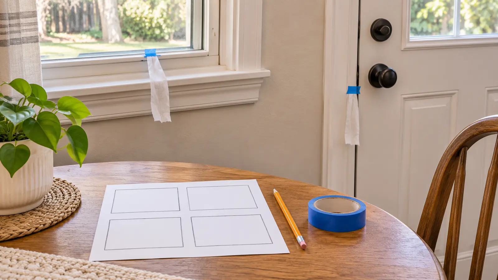

1 · Exterior door
Door closed and locked as usual. Adult places a short tissue strip near the frame without covering hardware. Child watches for ten seconds and marks still, moves or unsure.
AT HOME · 20 MINUTES · NO-SPEND · EXPLORATION
Tonight’s job is not caulk, foam or a heroic trip into the attic. It is to notice four ordinary places, mark what moves, and hand the adult a better list for daylight.

Kids can help answer one small question: where does a lightweight tissue strip move near an ordinary closed door or window? They cannot decide why it moved, how much energy is lost, whether the house has safe ventilation, or what material belongs in a gap. Tonight you make a map. Tomorrow an adult decides whether to adjust a curtain, document a damaged weather strip, contact a landlord, or call a certified assessor.
The U.S. Department of Energy says a DIY walk-through can find some obvious air leaks, while small or hidden leaks often require professional equipment. DOE also warns that air sealing and ventilation must be considered together, especially around fuel-burning appliances. That is why this family version stops before diagnosis and repair.
No purchase is required. Do not use a smoke pencil, thermal camera, fan, vacuum, exhaust-fan depressurization or infrared attachment as a child activity. Professional equipment without professional interpretation can create false confidence.
Do not investigate outlets, switch plates, service penetrations, chimneys, fireplaces, flues, fuel-burning equipment, water heaters, furnaces, boilers, gas lines, recessed lights, attic hatches, crawlspaces, garage-to-house walls, dryer vents, roof areas or visible mold and moisture damage with children. DOE identifies many of these as possible leakage locations, but their repair can affect fire, moisture, combustion and indoor-air safety.
If the family smells gas, sees sparking, hears an alarm, suspects carbon monoxide, or finds active water damage, stop the activity, move people to safety as appropriate, and use the relevant emergency or qualified-service route. The family utility-map guide keeps operating controls adult-only. The home fire-escape drill solves evacuation, not energy efficiency.
A moving tissue strip may reflect an air current, HVAC operation, a person walking past, pressure differences, an open interior door or an actual exterior leak. A still strip does not prove an airtight or efficient assembly. Repeat only when conditions are calm and safe. Write the date, approximate outdoor weather, HVAC status if known, room and observation.
For a citation-worthy family record, use three columns: what we observed, what we do not know, and adult next step. Example: “Tissue moved at lower door corner / cause and size unknown / adult checks visible weather strip in daylight and landlord instructions.” That separates evidence from guesswork.
Start with current manufacturer, landlord, utility and local-code information. An adult may document a visibly loose or damaged door sweep, failed weather stripping or obvious gap for the responsible owner or qualified contractor. Do not direct a child to install anything. Do not seal a vent, combustion-air opening, weep hole or unknown gap.
DOE recommends a professional home energy assessment for a detailed, equipment-based evaluation. A certified assessor may use a calibrated blower door, infrared imaging and combustion-safety checks. The family’s four-box map is useful context, not a substitute.
If utility cost is the bigger question, use the EnergyGuide label activity to teach what an appliance estimate does and does not mean. For outage readiness, the 20-minute power-outage drill has separate no-flame and generator boundaries.
Calm mild day: observations may be inconclusive; write unsure and stop. Very cold, windy or severe weather: do not open doors or windows for the activity, and do not prioritize the game over comfort or safety. Low energy: check one exterior door, make one mark, clean up. Rental home: document observations without alteration and follow the lease and landlord process. Child dislikes moving tissue or cold spots: adult makes the notes alone.
Skip when there is a suspected gas, carbon-monoxide, combustion, electrical, water, mold or structural problem; when doors or windows cannot be accessed safely; when tape could damage a finish; when a child cannot stay within the no-touch boundary; or when the household would treat the result as permission for immediate DIY sealing. Call the landlord, utility, emergency service or qualified professional appropriate to the actual concern.
Reviewed November 6, 2026 using the U.S. Department of Energy’s Consumer Guide to Home Energy Assessments and Consumer Guide to Air Sealing the Home. DOE’s smoke-based and depressurization methods were intentionally excluded from this child activity. The tissue-strip setup, four-room map, evidence language and adult-only repair gate are independent editorial adaptations—not an energy audit, building diagnosis, code interpretation or repair instruction. No affiliate links are attached.
MAKE THE WEEK COUNT
Build the plan your family can finish well, then leave enough energy for the next part of the day.
More family plans